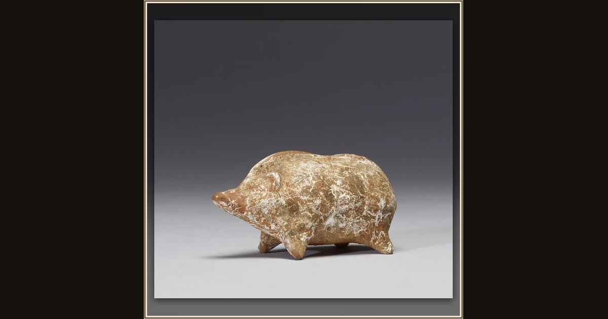

Pig Statuette
Boeotian Greek workshop (unknown maker) · 5th century BCE · The Walters Art Museum · Baltimore, USA
Eumaeus the swineherd guards hundreds of pigs for the household — and a real Greek child might have owned a little clay pig just like this one. Shaped in Boeotia about 2,500 years ago, it may have been left as a small offering at a temple. Explore its place in